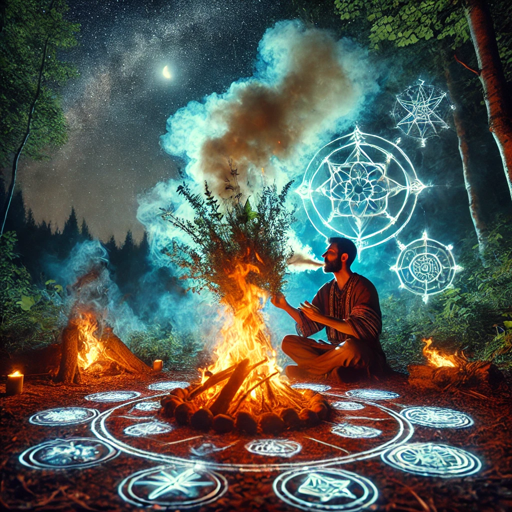

The shaman lights a bundle of herbs, their earthy fragrance filling the air. They begin to chant softly, their words resonating deep within your chest, even though the language is unknown. The flames of the ritual fire flicker and shift, casting shadows that seem to move with purpose.
“You carry much within you—burdens, truths, and unspoken questions,” the shaman says, their voice a steady current. “This ritual will not give you answers, but it will open the door to clarity. Are you ready to receive it?”
You nod, feeling the weight of their words. The shaman sprinkles a glowing powder into the fire, and the flames burst into vibrant colors. Shapes and symbols emerge, forming a kaleidoscope of energy that feels alive. You close your eyes and let the ritual take hold.

As the ritual unfolds, three paths appear in your mind’s eye, each one illuminated by a different energy. Which path will you choose?